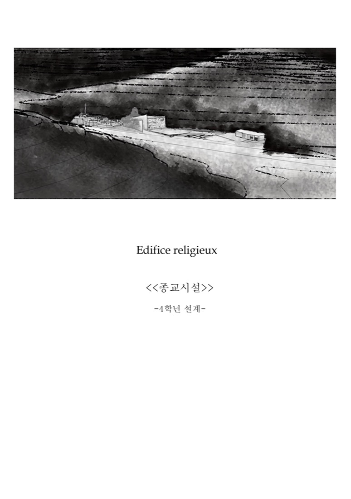
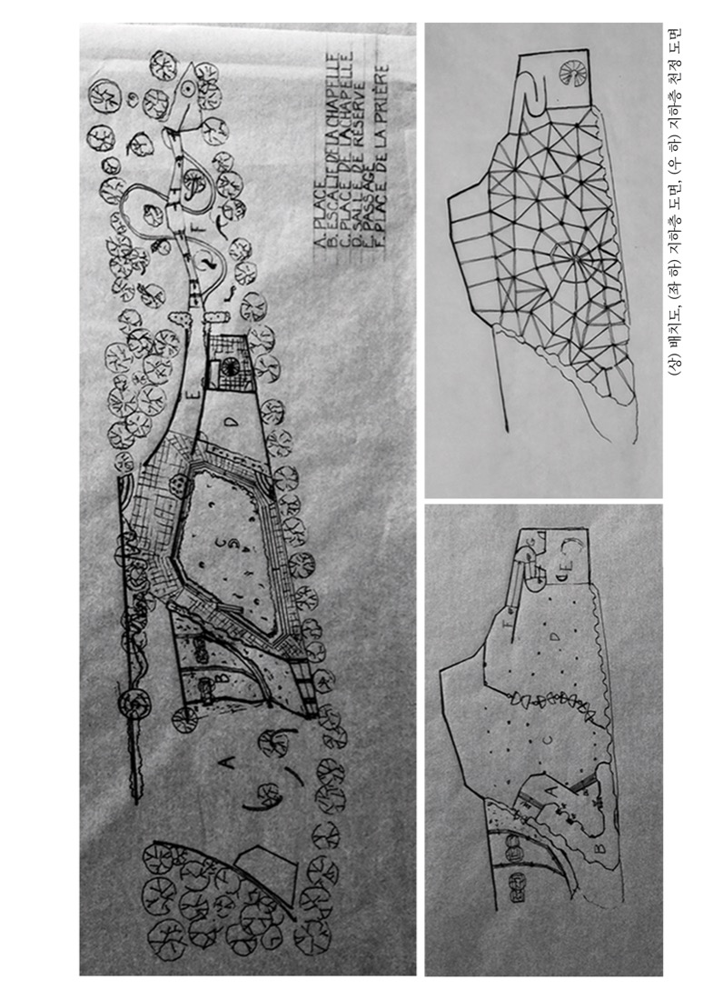
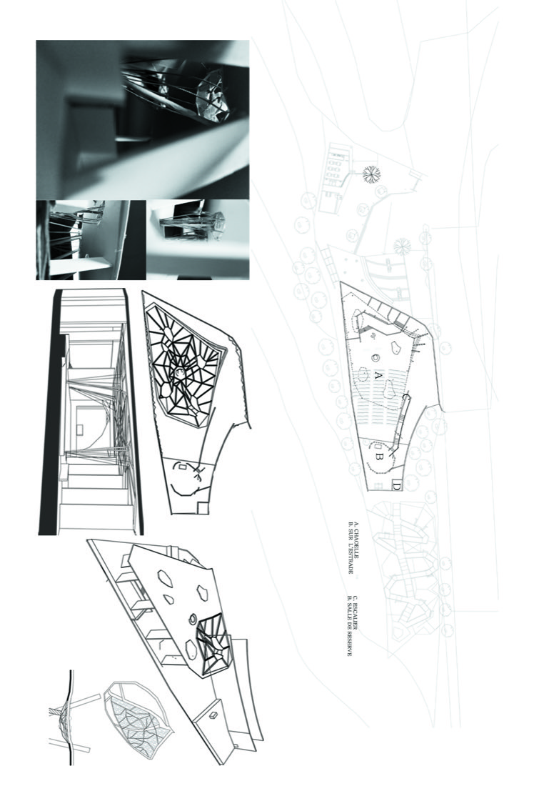
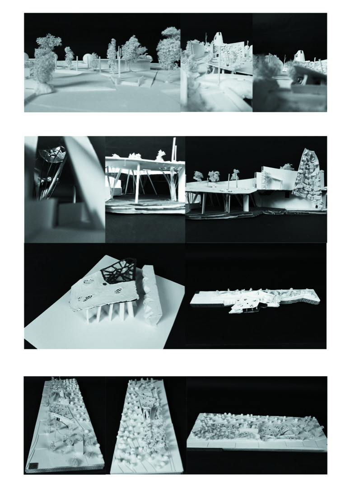

자유설계 학기를 맞아, 종교의 본질을 한 학기 동안 탐구하기로 마음을 먹고 종교에 대해서 고민하기 시작했다. 그 중에서 기독교를 설계의 방향으로 하여 현대에서 교회의 예배당이 없다는 전제하에 설계에 접근하기로 하였다.
이러한 설계에 대한 고민은 모든 공간에서 사람이 종교의 본질에 다가가기 위한 고민과 생각을 공간의 시퀀스로 이루어질 수 있게 하였고, 이는 결국 이 지역에도 동일하게 적용되어 주변과 맞춰서 지역주민 또한 동일한 시퀀스를 느끼도록 하였다.
이는 종교시설이 신을 언제나 생각할 수 있도록 하는 것이 종교시설의 본질이자 목적으로 생각하고 이 설계를 진행하였다.

Chemin : dans le bâtiment et même pas donner des enseignements aux gens. Il ne devrait pas donner un sens à la personne. Les gens se sentent la spatialité.
길 : 건물 안에서 사람들에게 가르침을 주지도 않는다.
사람에게 의미를 주어서는 안 된다. 사람들이 공간을 느낀다.

Obscurité rend les personnes déprimées. Il est un fait très important. La dépression peut aussi provoquer une personne trouve Dieu, mais il a aussi remporté pris.
어둠은 사람을 우울하게 만든다. 이것은 매우 중요한 사실이다.
우울은 사람이 신을 찾게 만들기도 하지만, 동시에 앗아가기도 한다.
